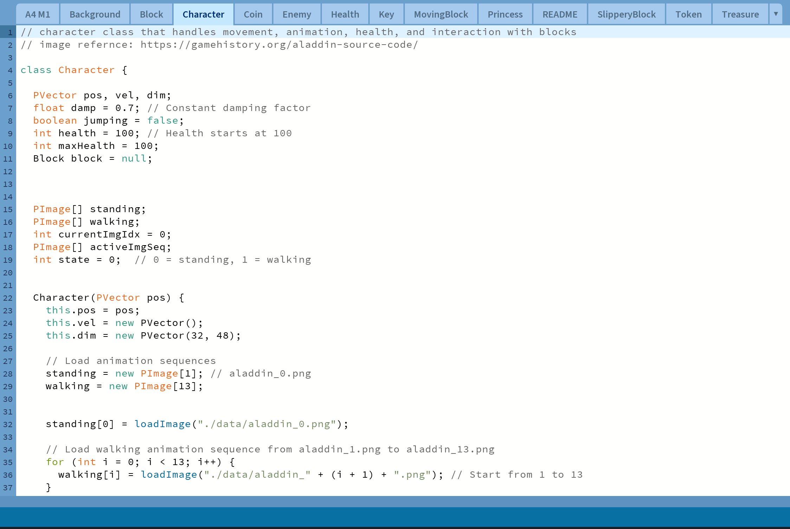
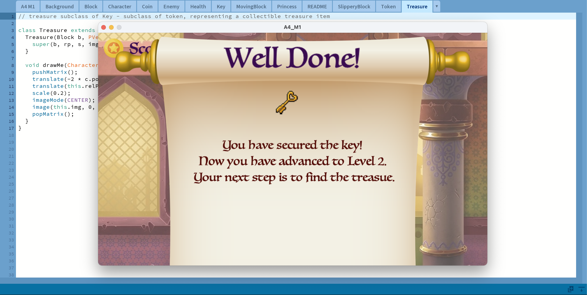
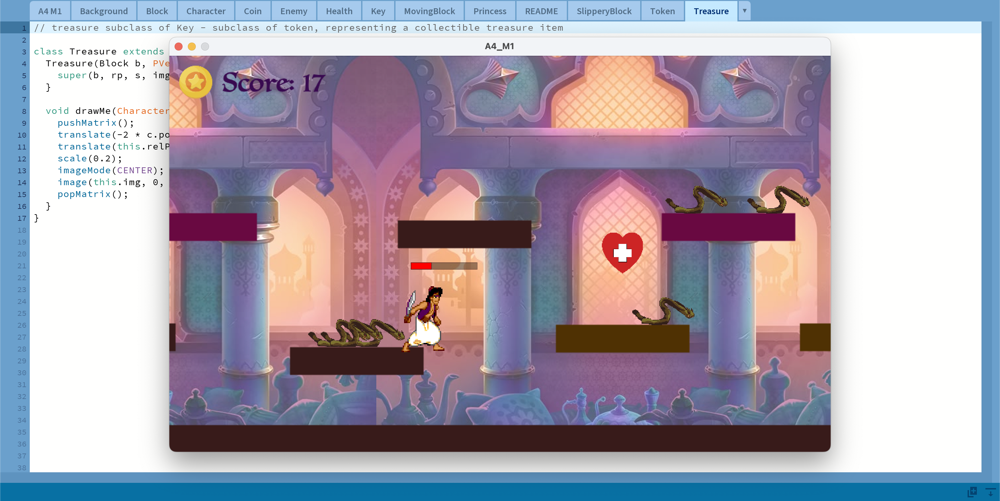

The Process
Phase 1
Concept & Planning
Before writing a line of code, I built a full game proposal, storyboard, and UML diagram. The diagram
mapped every class, field, and method across all 15 files, from Character and Enemy
to MovingBlock and SlipperyBlock. Planning this upfront meant the codebase
stayed organized and extendable throughout development.
Phase 2
Asset Design
Sprite animations for Aladdin's run, jump, and coin spin were sourced from free libraries, all
cited in the README. I designed the health token and intro letter myself in Figma. Some in-game
shapes were drawn directly in Java. Everything lived in a central data/ folder.
In hindsight, I underestimated my own ability. The assets I created were strong. Future projects
will prioritize original work from the start.
Phase 3
Core Development


Built using OOP and encapsulation, each class self-contained and reusable. Key systems I implemented:
- A 6-state game state machine (title, instructions, 3 levels, victory, death)
- Procedural block generation that spawns and despawns blocks as the player moves
- Three block types: standard,
MovingBlock, and SlipperyBlock
- Enemy AI with snakes pacing their assigned block; 10 in Level 2, 20 in Level 3
- Health system with token pickups and continuous damage on enemy contact
- Sound management via Minim covering music, transitions, coins, death, and victory
- 8-frame animated sprites and a full Play Again reset function
Phase 4
Level Escalation & Testing


Each level escalated difficulty through physics parameters. Level 2 reduced movement speed and
increased gravity. Level 3 pushed further with acc = 0.2 and grav = 5.5,
plus 20 enemies and Princess Jasmine appearing after a 7-second countdown. Touching her triggers
the victory state.
I playtested every level repeatedly, tuning hitboxes, platform timing, and trigger logic.
Encapsulation made debugging efficient as issues were isolated per class without breaking the system.
Problems & Reflection
Problem
Collision detection with moving enemies was inaccurate.
Enemy positions needed to account for the world scroll offset. I resolved this by computing
screen-relative positions using worldOffset and separating Aladdin/Jasmine collision
from Aladdin/Enemy collision into two overloaded checkCollision() methods.
Problem
Block clustering made early levels unplayable.
Procedural generation placed blocks too close together. I added a minimum distance check
(minDistance = 200) that rejects positions too near existing blocks and re-rolls
until a valid position is found.
Feedback
Aladdin couldn't fight back, only avoid.
The health system meant taking damage was passive. With more time, I would have added a projectile
attack for Aladdin and a boss enemy in Level 3. Time constraints kept these on the backlog,
but the feedback sharpened how I scope future projects.
What I Learned
Planning pays off. Documentation matters.
The UML diagram directly reduced debugging time. Working solo on a 15-class system taught me
how much upfront structure matters. The main feedback was to add more code comments, which reinforced
that clear documentation is as important as strong programming.